neural-networks
convex-recombination
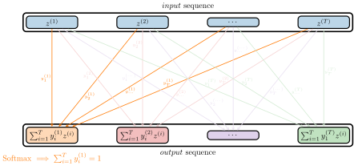
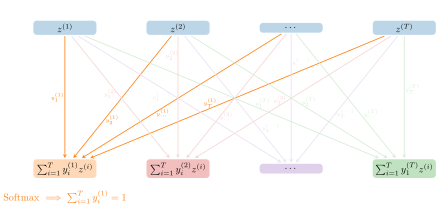
convex-recombination: Visualization of the reweighting of the input sequence. Here the different coefficients are mostly independent of each other and could in theory produce the same reweighting for each output vector.
light: PDF · SVG · PNG 150 · 300 · 600


dark: PDF · SVG · PNG 150 · 300 · 600


gml-venn
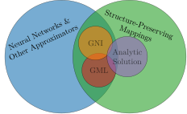
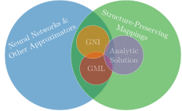
gml-venn: Geometric machine learning (GML) like traditional geometric numerical integration (GNI) and other structure-preserving numerical methods aims at building models that share properties with the analytic solution of a differential equation.
light: PDF · SVG · PNG 150 · 300 · 600


dark: PDF · SVG · PNG 150 · 300 · 600


linear-symplectic-transformer
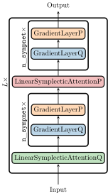
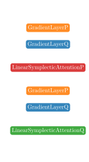
linear-symplectic-transformer: Visualization of the linear symplectic transformer architecture. In this figure the number of SympNet layers per transformer block is two.
light: PDF · SVG · PNG 150 · 300 · 600


dark: PDF · SVG · PNG 150 · 300 · 600


mha
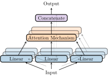
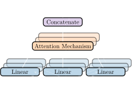
mha: A representation of a multihead attention layer with three heads.
light: PDF · SVG · PNG 150 · 300 · 600


dark: PDF · SVG · PNG 150 · 300 · 600


multiple-parameters
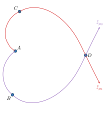
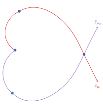
multiple-parameters: Two trajectories of a parameter-dependent ODE with the same initial condition.
light: PDF · SVG · PNG 150 · 300 · 600


dark: PDF · SVG · PNG 150 · 300 · 600


skew-sym-mapping
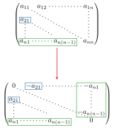
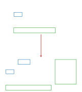
skew-sym-mapping: The lower-triangular part is copied to the upper-triangular part and the respective entries are negated.
light: PDF · SVG · PNG 150 · 300 · 600


dark: PDF · SVG · PNG 150 · 300 · 600


structs-visualization
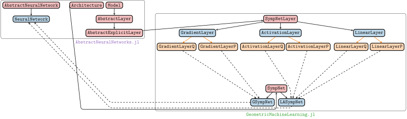
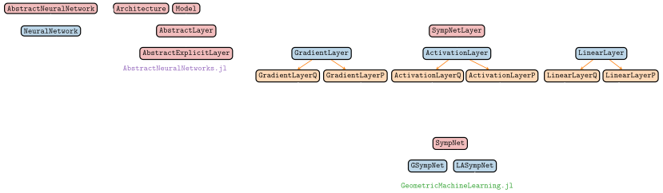
structs-visualization: Visualization of how the packages interact.
light: PDF · SVG · PNG 150 · 300 · 600


dark: PDF · SVG · PNG 150 · 300 · 600


structure-preservation-hierarchy
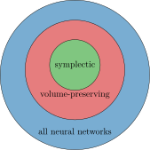
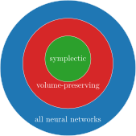
structure-preservation-hierarchy: Symplectic neural networks are a more restrictive class of architectures than volume-preserving ones. But by construction they only work in even dimensions.
light: PDF · SVG · PNG 150 · 300 · 600


dark: PDF · SVG · PNG 150 · 300 · 600


sympnet-architecture
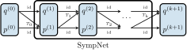
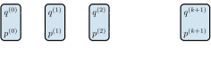
sympnet-architecture: Visualization of the SympNet architecture.
light: PDF · SVG · PNG 150 · 300 · 600


dark: PDF · SVG · PNG 150 · 300 · 600


transformer-encoder
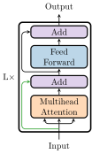
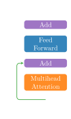
transformer-encoder: Visualization of the standard transformer. It consists of two components: a multihead attention layer and a feedforward neural network.
light: PDF · SVG · PNG 150 · 300 · 600


dark: PDF · SVG · PNG 150 · 300 · 600


transformer-upscaling
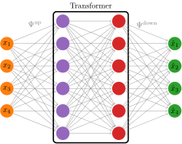
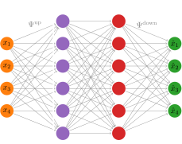
transformer-upscaling: If the transformer dimension is not equal to the system dimension, then we add two more neural network layers. One that maps up to the space whose dimension is the transformer dimension and one that maps down again to the space whose dimension is the system dimension.
light: PDF · SVG · PNG 150 · 300 · 600


dark: PDF · SVG · PNG 150 · 300 · 600


vp-feedforward
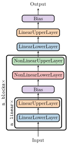
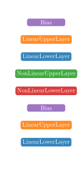
vp-feedforward: Visualization of how the keywords in the constructor are interpreted.
light: PDF · SVG · PNG 150 · 300 · 600


dark: PDF · SVG · PNG 150 · 300 · 600


vp-transformer
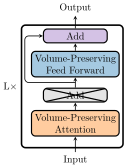
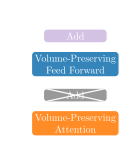
vp-transformer: Visualization of the Volume-Preserving Transformer architecture.